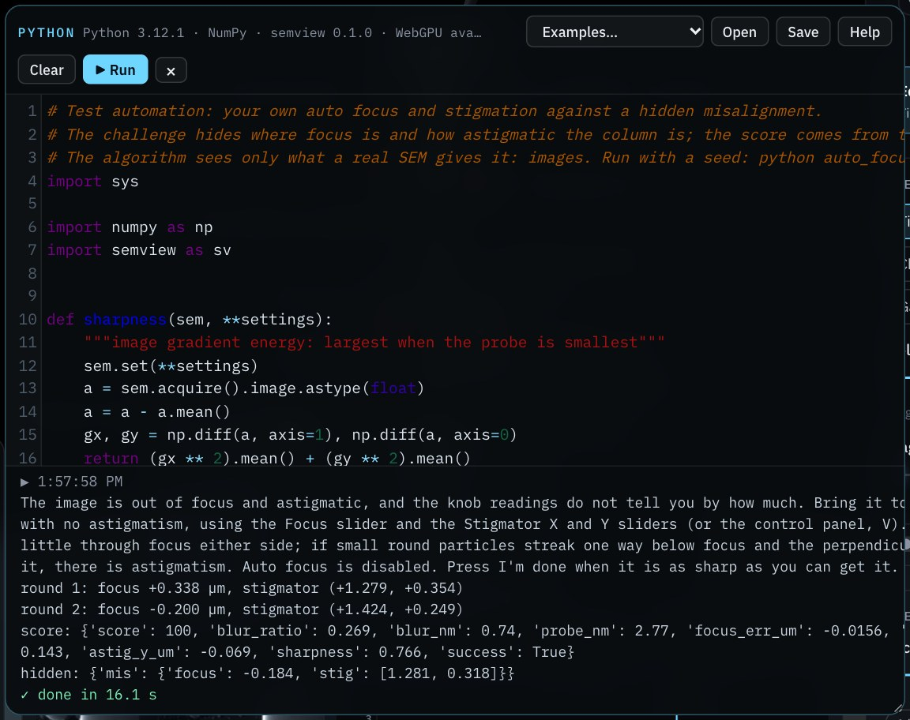
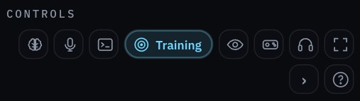
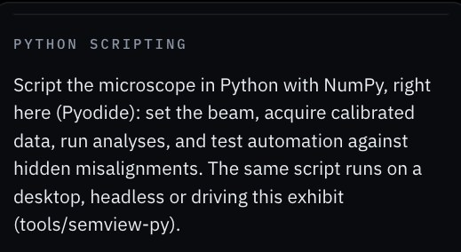
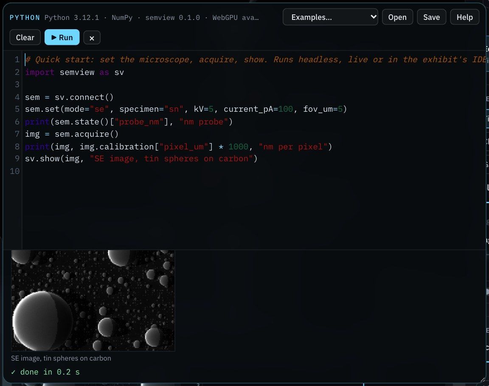

Script the SEM-view microscope from Python: in the exhibit's IDE, headless on a desktop, or driving an open exhibit. Record NumPy data, run analyses, and test automation algorithms against a hidden misalignment.

The semview Python package controls the simulated microscope: it changes settings, records detector data as NumPy arrays with calibrations, runs analyses that report the simulator's true values, and sets hidden misalignments (challenges) that score an algorithm against the truth. The same script runs in three places.
| Where | Open with | Needs | Best for |
|---|---|---|---|
| Python IDE in the exhibit | sv.connect() | A browser; Python runs in it (Pyodide) | Teaching, quick experiments, watching the exhibit respond |
| Desktop, headless | sv.connect() or sv.connect("headless") | Python 3.10+, NumPy, Node.js 20+ | Long runs, batch data, algorithm benchmarks, CI tests |
| Desktop, live | sv.connect("live") | The above, websockets, an open exhibit | Desktop tools driving the exhibit on screen |
| 1 | Run a first script in the exhibit's IDE |
| 2 | Install the package on a desktop |
| 3 | Learn the calls |
| 4 | Test an automation algorithm with challenges |
| 5 | Batch data and regression tests |
A challenge is a training task's hidden misalignment, set up for a script instead of a person. The knob is the setting a script reads and changes; the truth is the optics the simulator actually applies. During a challenge the two differ by the hidden amount, as on a misaligned instrument.
score() and reveal() only after the algorithm has finished..py file; Open loads one. Help lists the calls.Result. The script changes the exhibit, and its output appears below the editor.
import semview as sv
sem = sv.connect()
sem.set(mode="se", specimen="sn", kV=5, current_pA=100, fov_um=5)
print(sem.state()["probe_nm"], "nm probe")
img = sem.acquire()
print(img, img.calibration["pixel_um"] * 1000, "nm per pixel")
sv.show(img, "SE image, tin spheres on carbon")



The headless backend runs the simulator's own JavaScript in Node.js, so the package is installed from a copy of the repository and stays linked to it.
git clone https://github.com/Advanced-EM/SEM-view
python -m venv .venv && source .venv/bin/activate # Windows: .venv\Scripts\activate
pip install -e "SEM-view/tools/semview-py[live,plot,test]"
pytest SEM-view/tools/semview-py/tests # all tests should pass
python SEM-view/tools/semview-py/examples/quickstart.pynode --version must report 20 or later.sem = sv.connect() starts the simulator in a background Node process. It stops when the script ends, or with sem.close().with sv.connect() as sem: …Result. sem.info()["backend"] is "headless", and a typical acquisition returns in a fraction of a second.
SEMVIEW_ROOT to its folder.sv.connect("live") prints that it is waiting for the exhibit.sem = sv.connect("live", port=8792, timeout=120)Result. The script prints “Exhibit connected.”, and the exhibit shows Agent connected.
Every call is the same on the three backends. sem is the object sv.connect() returns.
| Call | Returns, or does |
|---|---|
sem.set(**settings) | Changes settings (next page); returns what was done |
sem.state() | Settings and beam: probe size and its budget (source, Cₛ, Cc, diffraction, aperture), depth of field, sharpness, charging |
sem.command(text) | Runs a plain-language command: "focus plus 0.5" |
sem.autofocus() | The instrument's auto focus and stigmation (disabled in challenges that test your own) |
sem.profile(**fields) | The digital twin's instrument profile: read it, pick a preset, or set calibrations (magCal, scanAspect, scanShear, Br, edsFWHM, …) |
sem.acquire(steps=None) | An Acquisition (below), after advancing the simulation so it reflects the settings (an EBSD map runs to the end, EDS counts for 3 s) |
sem.analyze(name) | calibrate_scale, fit_resolution, fit_focus, reconstruct_relief, fit_eds, phase_map, index_ebsd, fit_cl, mc_summary; the result includes the true values |
sem.step(n) | Advances n frames of 50 ms: EDS counts accumulate, maps fill in, the wobbler swings |
sem.info() | Modes, specimens, settings, analyses, challenges and instrument presets available |
sem.challenge(id, seed) | Starts sem-focus-stig, sem-aperture-align, sem-insulator or ebsd-setup |
sem.score() · sem.reveal() | The challenge's score from the true optics · the hidden values |
sem.end_challenge() | Restores the instrument as it was |
sv.show(x, title) | Draws a 2D image or a 1D profile (IDE output, or matplotlib) |
| Name | Values |
|---|---|
mode | se, inlens, bse, ebsd, tkd, eds, cl, mc |
specimen | sn (tin on carbon), ni (nickel), chip, grid (cross grating), gan (GaN LED) |
kV | Accelerating voltage, 0.5 to 30 |
current_pA | Probe current, 1 to 20,000 |
aperture_um, wd_mm | 10, 20, 30, 60 or 120 µm; working distance 2 to 20 mm |
focus_um | Focus offset on the knob; the range follows the field of view (±0.6 × field) |
stig_x, stig_y | Stigmator, ±2 µm |
aperture_x_um, aperture_y_um | Aperture alignment, ±40 µm |
fov_um, stage_um | Field of view (within the specimen's range); stage position [x, y] |
tilt_deg, dwell_us | Stage tilt 0 to 72°; pixel dwell 0.1 to 30 µs |
coated, etd_bias_V | Carbon coating; ETD Faraday cage −150 to +300 V |
bse, segments | comp, topoX, topoY; or each quadrant +1, −1, 0 |
map_size, exposure_ms, foil_nm | EBSD/TKD map 24, 40 or 56; pattern exposure; TKD foil thickness |
cl_mode, cl_wavelength_nm, cl_band_nm | pan or mono; monochromator centre 300 to 800 nm and bandwidth |
realistic, beam, wobbler | Shot noise (True) or the clean view; beam on or blanked; focus wobbler |
Settings apply in a fixed order whatever order you write them: specimen, mode, then the optics. Choosing a mode applies its usual conditions (for example, EBSD sets 70° tilt, at least 20 kV and nanoamps; CL inserts the mirror at 10 mm working distance), so set those values after it or in the same call.
SemviewError with the reason, for example unknown setting defocus or a training task is running.a.image | The main array: image, map, spectrum, … |
a["segment_A"], a.arrays | Any array by name (BSE quadrants, EBSD Euler maps, EDS element maps, the CL cube); all of them |
a.calibration | Pixel size, map step, energy or wavelength scale, as recorded |
a.meta | The full metadata, including the instrument state |
a.save("x.npz") | The same .npz file the exhibit's Export button writes |
a = sem.acquire()
a.image.shape # (256, 256)
a.calibration["pixel_um"] # µm per pixel (nominal)
a.meta["beam"] # kV, current, probe size, convergence
a.save("run.npz") # numpy.load() reads it backA challenge hides a misalignment, so the knob readings no longer show the true optics. The algorithm works only from what a real microscope gives it: images and measurements. Afterwards, score() grades the result against the truth. A fixed seed repeats the same misalignment, so algorithms are compared on the same cases.
sem.challenge("sem-focus-stig", seed=1).state() (the knobs), acquire, and analyze, but not score() or reveal().sem.score().sem.end_challenge() to restore the instrument.examples/auto_focus_stig.py corrects focus and two-fold astigmatism from the images alone:
| Seed | Score before → after | Focus error | Astigmatism left |
|---|---|---|---|
| 1 | 19 → 100 | 15 nm | 0.22 µm |
| 2 | 27 → 100 | 25 nm | 0.23 µm |
| 3 | 46 → 100 | 42 nm | 0.17 µm |
| 4 | 30 → 100 | 37 nm | 0.19 µm |
| 5 | 27 → 100 | 29 nm | 0.07 µm |
| 6 | 57 → 100 | 9 nm | 0.05 µm |
| 7 | 75 → 100 | 29 nm | 0.25 µm |
| 8 | 64 → 100 | 26 nm | 0.08 µm |
Headless; tin spheres, 450 nm field, 10 kV; about 90 acquisitions and 24 s per seed. The images carry shot noise, so the same seed ends slightly differently from run to run (in the IDE as well); it passes the same way.
Simulated data comes with exact ground truth, which makes it useful for training and testing analysis models. Run this headless:
import json, semview as sv
with sv.connect() as sem:
sem.set(mode="se", specimen="sn", kV=10, fov_um=0.45, realistic=True)
sem.autofocus() # a sharp, stigmated start
f0, (x0, y0) = sem.state()["focus_um"], sem.state()["stig"]
labels = []
for i, df in enumerate((-0.6, -0.3, 0, 0.3, 0.6)):
for dx, dy in ((0, 0), (0.5, 0), (0, 0.5), (0.4, -0.4)):
sem.set(focus_um=f0 + df, stig_x=x0 + dx, stig_y=y0 + dy)
name = f"focus_{i}_{dx:+.1f}_{dy:+.1f}.npz"
sem.acquire().save(name)
labels.append({"file": name, "defocus_um": df, "astigmatism_um": [dx, dy]})
json.dump(labels, open("labels.json", "w"), indent=1)
The labels are relative to the auto focus result, which lands within a few hundredths of a micrometre of the true focus and stigmation. Each .npz also carries the full instrument state in its metadata.
sem.state() and sem.info() with every result.realistic=True) when shot noise matters to the algorithm.git rev-parse HEAD); the simulator improves between versions.Put the benchmark in a test so that changes to the algorithm or the simulator cannot silently make it worse:
# tests/test_autofocus.py
import pytest, semview as sv
from auto_focus_stig import align # tools/semview-py/examples
@pytest.fixture(scope="module")
def sem():
with sv.connect() as m:
yield m
@pytest.mark.parametrize("seed", range(1, 9))
def test_autofocus(sem, seed):
sem.challenge("sem-focus-stig", seed=seed)
align(sem, verbose=False)
assert sem.score()["score"] >= 85
sem.end_challenge()
The SEM-view repository runs its own tests this way on every pull request (.github/workflows/tests.yml), with Node.js 20 and Python set up in the workflow.
examples/find_e2.py steps the voltage down on an uncoated alumina inclusion until it stops charging. With seed 7 it stops at 1.8 kV, against a hidden E2 of 1.82 kV.An SE or BSE image takes about a quarter of a second, a through-focus analysis about half a second, and a 40 × 40 EBSD map a few seconds. The simulator computes on the CPU in JavaScript. The calls do not depend on how it computes, so a future WebGPU backend could speed up the same scripts without changes; the IDE's status line shows whether the browser offers WebGPU.
| Observation | Likely cause | Action |
|---|---|---|
| The IDE says “Python could not load” | No network on first use, or the CDN is blocked | Connect once; later opens use the browser cache |
| The exhibit freezes while a script runs | Expected: IDE scripts run on the page's thread | Wait; move long loops to a desktop |
SemviewError: A training task is running | A person is doing a training task | Finish or give up the task first |
Node.js 20 or later is needed | Node is missing or old | Install Node.js 20+; check node --version |
SEM-view not found at … | The package is not linked to a copy of the repository | Install with pip install -e from a clone, or set SEMVIEW_ROOT |
port 8792 is in use | An AI client runs semview-mcp | Close it, or connect("live", port=8793) |
| No exhibit connected within the timeout | Connect agent not selected, or the exhibit joined another server | Select Connect agent again; close other semview servers |
| Images look blurred or streaked | Defocus or astigmatism (the column has its own) | Run sem.autofocus() (outside challenges), or your own focus and stigmation |
| Results differ between runs | Unseeded challenge, drift, or realistic shot noise | Fix the seed; average several acquisitions; use the clean view (realistic=False) when noise does not matter |
| Item | Value or criterion | Initials | |
|---|---|---|---|
| IDE runs the Quick start example | Image and probe profile shown | ||
| Desktop package installed, tests pass | All passed | ||
| Live mode connects | “Exhibit connected.”; port ______ | ||
| Algorithm benchmarked on challenges | Seeds ______ ; mean score ______ | ||
| Repository commit and settings recorded | Commit ____________ |
The link opens SEM-view with the Python IDE and the Quick start example loaded. Select Run.
github.com/Advanced-EM/SEM-view
tools/semview-py
SOP-01 SEM column alignment and SOP-02 analytical set-up: the tasks the challenges come from. SOP-03: AI agents and MCP.
Python in the browser: pyodide.org